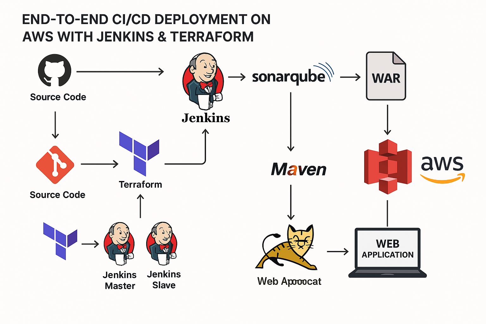
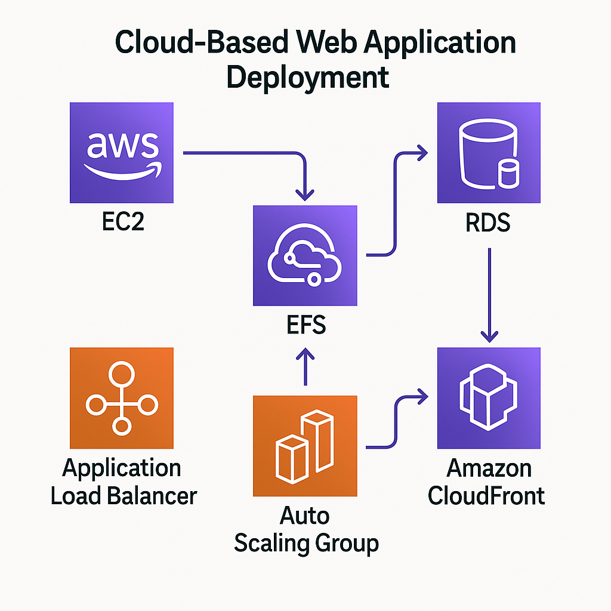
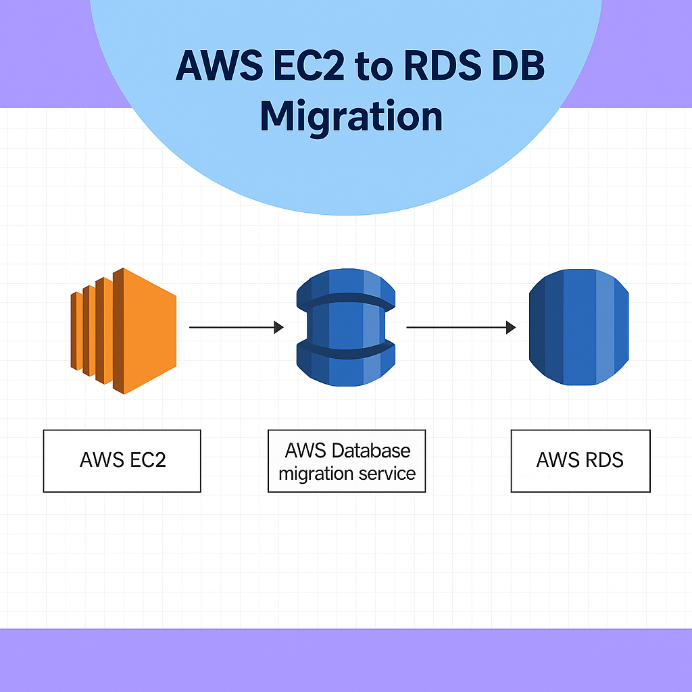

DevOps Engineer
I am a DevOps Engineer with a strong passion for automation, cloud computing, and optimizing software development processes. My expertise lies in CI/CD pipelines, cloud infrastructure, and containerization using tools like Jenkins, Docker, and Kubernetes. I love working with Terraform and Ansible to manage infrastructure efficiently and securely.
My experience extends to AWS, where I design, deploy, and maintain scalable cloud solutions. I have hands-on experience with EC2, S3, IAM, RDS, ELB, and VPC, ensuring high availability and security in cloud environments.
I am always looking for new technologies and better ways to improve workflows. Whether it’s automation, cloud migration, or security best practices, I am driven by the challenge of solving problems and making things more efficient.
Technical skills
AWS Services
Certification
Education
Developed an AI-powered OCR system for medical transcripts, achieving faster and more accurate conversions.
Developed an AI-based Optical Character Recognition (OCR) tool for automating the conversion of medical transcripts into digital soft copies.
Python, Unix, OCR, Image Processing, Manual & Automated Testing
📍 Road No 13, Koppole Main Road, Opp. Anjaneya Swamy Temple, Koppole, Ongole, Narasa Puram, Andhra Pradesh 523001

Description: Designed and implemented a fully automated CI/CD pipeline to deploy a Java-based web application on an Apache Tomcat server using Jenkins, Terraform, and AWS cloud services. This project focused on infrastructure automation, continuous integration, and continuous deployment to deliver applications more efficiently and reliably.

✅ Designed and deployed a secure, scalable three-tier web application architecture on AWS using EC2, ALB, ASG, Route 53, ACM, and Aurora MySQL, ensuring high availability, fault tolerance, and optimized performance across multiple availability zones.☁️💻

✅ Automated MySQL database migration from EC2 to Amazon RDS using Terraform and AWS DMS, reducing manual effort and ensuring minimal downtime.
✅ Provisioned and managed cloud infrastructure using Infrastructure as Code (IaC) with Terraform to deploy EC2, RDS, and DMS resources consistently and efficiently.
copyright 2025 Arumulla Yaswanth Reddy All rights reserved.